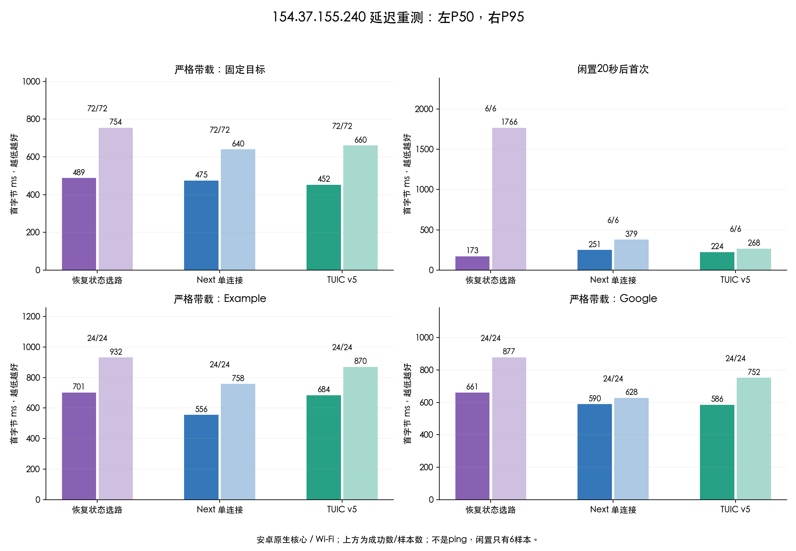

2026-11-23 · HONOR TFY-AN00 / Android12 · 同一Wi-Fi · 本次全新采样
TUIC冷启动和连续请求P95较低；Next单连接在八路短请求、固定目标带载和两个真实网站带载P95较低；恢复状态选路在四路短请求P95较低，但没有全面领先。闲置恢复中恢复选路有一次1.77秒慢请求，六次样本不足以推断长期概率。
恢复选路=Next双通道、自适应与RecoveryAware启用；单连接=Next单通道；TUIC v5=Mihomo客户端＋CatNode V2Core服务器、原生连接池未人为双开。三组显式BBR，但实现/窗口默认值不同；不是严格等连接数实验。预算、首段副本、确认合并、0RTT/FastOpen关闭。沿用冻结二进制，测试中不调参。Next信号来自本端发包判丢和RTT，没有新增服务端下行恢复反馈；既有业务不自动重放。
每项主指标6轮、六种先后顺序各一次；两组实验端口19451/19458交叉分配，每配置各端口3轮。真实网站2轮，每配置每端口1轮。每组重启服务并冷却5秒，性能测试不采逐包或选路日志。端口交叉不能消除全部公网路由、时段或源端口影响。
固定目标是本VPS的TLS HTTPS服务。冷启动每请求新建客户端/入口；连续请求复用入口，每次仍新建目标TLS。首字节包括入口、目标TLS和HTTP，不能当ping或App启动时间。串行场景未必建立第二通道，因此不同数字不能直接归因恢复算法。
带载背景2×4MiB，前台12次HEAD；等待两条背景各收到256KiB或最多5秒。仅请求开始时两条已就绪且至少一条仍活跃的样本进入严格带载分位数；全部前台与背景完成数同时列出，文件结束完整SHA256校验。真实网站只替换前台目标，背景仍在本VPS。所有证书校验开启，临时实验根证书只供本轮程序使用，没有安装到系统；服务端临时hosts映射供TUIC目标嗅探后的解析。


| 场景 | 配置 | 成功/样本 | P50 ms | P95 ms | 最大 ms |
|---|---|---|---|---|---|
| 冷启动 | 恢复状态选路 | 72/72 | 295.18 | 593.37 | 1088.167 |
| 冷启动 | Next 单连接 | 72/72 | 287.53 | 629.75 | 953.808 |
| 冷启动 | TUIC v5 | 72/72 | 265.96 | 422.31 | 1129.92 |
| 连续请求 | 恢复状态选路 | 72/72 | 153.44 | 380.74 | 490.408 |
| 连续请求 | Next 单连接 | 72/72 | 167.00 | 372.56 | 537.219 |
| 连续请求 | TUIC v5 | 72/72 | 153.33 | 268.96 | 301.476 |
| 四路并发短请求 | 恢复状态选路 | 72/72 | 174.45 | 288.44 | 367.71 |
| 四路并发短请求 | Next 单连接 | 72/72 | 185.33 | 446.94 | 498.985 |
| 四路并发短请求 | TUIC v5 | 72/72 | 158.37 | 346.66 | 484.962 |
| 八路并发短请求 | 恢复状态选路 | 144/144 | 214.45 | 340.23 | 1293.509 |
| 八路并发短请求 | Next 单连接 | 144/144 | 176.84 | 289.51 | 375.158 |
| 八路并发短请求 | TUIC v5 | 144/144 | 190.74 | 319.37 | 474.041 |
| 严格带载：固定目标 | 恢复状态选路 | 72/72 | 489.18 | 754.30 | 915.533 |
| 严格带载：固定目标 | Next 单连接 | 72/72 | 474.73 | 640.21 | 753.76 |
| 严格带载：固定目标 | TUIC v5 | 72/72 | 452.00 | 660.45 | 712.618 |
| 闲置20秒后首次 | 恢复状态选路 | 6/6 | 172.56 | 1765.67 | 1765.672 |
| 闲置20秒后首次 | Next 单连接 | 6/6 | 250.83 | 379.29 | 379.289 |
| 闲置20秒后首次 | TUIC v5 | 6/6 | 224.29 | 268.12 | 268.118 |
| 严格带载：Example | 恢复状态选路 | 24/24 | 701.01 | 931.80 | 955.521 |
| 严格带载：Example | Next 单连接 | 24/24 | 555.72 | 758.28 | 760.36 |
| 严格带载：Example | TUIC v5 | 24/24 | 684.39 | 870.15 | 1386.941 |
| 严格带载：Google | 恢复状态选路 | 24/24 | 661.23 | 877.48 | 1052.546 |
| 严格带载：Google | Next 单连接 | 24/24 | 589.67 | 627.62 | 657.24 |
| 严格带载：Google | TUIC v5 | 24/24 | 586.14 | 751.75 | 801.224 |
| 带载场景 | 配置 | 全部前台成功 | 严格样本数 | 背景完成 |
|---|---|---|---|---|
| mixed/mixed | 恢复状态选路 | 72/72 | 72 | 12/12 |
| mixed/mixed | Next 单连接 | 72/72 | 72 | 12/12 |
| mixed/mixed | TUIC v5 | 72/72 | 72 | 12/12 |
| web-example/mixed | 恢复状态选路 | 24/24 | 24 | 4/4 |
| web-example/mixed | Next 单连接 | 24/24 | 24 | 4/4 |
| web-example/mixed | TUIC v5 | 24/24 | 24 | 4/4 |
| web-google/mixed | 恢复状态选路 | 24/24 | 24 | 4/4 |
| web-google/mixed | Next 单连接 | 24/24 | 24 | 4/4 |
| web-google/mixed | TUIC v5 | 24/24 | 24 | 4/4 |
P50/P95按成功样本最近秩计算，失败另列。闲置只有六次首次请求，P95等于最慢值；不是切网验收。带载是否达到阈值与严格样本数必须一并看，不能只取成功分位数作为可靠性评分。
冻结计划及SHA256 · 完整顺序与时间线 · 汇总 · 全部CSV · 分端口切片 · 探索性按轮重采样 · 校验与清理 · 复现说明
安卓原生核心独立程序、Wi-Fi测试，不替代正式App/TUN、蜂窝、锁屏耗电、隐蔽性或长期可用性验收。仅六个配对轮次，重采样区间不作正式显著性结论。手机VPN和唤醒设置在结束后恢复；临时入口和私钥清理。